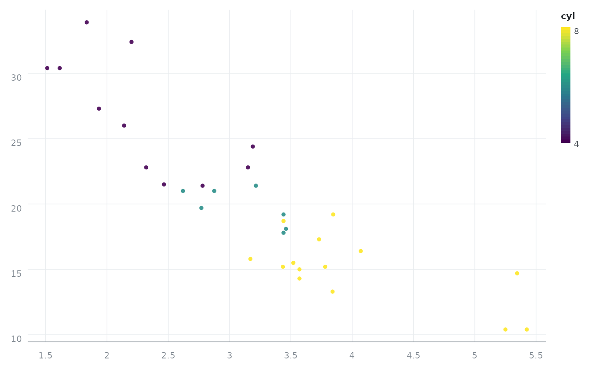

orb() creates a plot specification: it records the data and the mapping
from variables to visual channels. Layers, labels, scales and themes are
added with +. Nothing is drawn until the plot is printed or saved, so a
specification is cheap to build and modify.
Details
Mappings are given as bare column names, in the style of a formula-free
grammar: orb(df, x = wt, y = mpg, colour = cyl). The recognised channels
are x, y, colour (or color), fill, size, label, group and
tooltip.
Examples
p <- orb(mtcars, x = wt, y = mpg, colour = cyl) + orb_points()
p
#> <orb_spec>
#> data: 32 rows x 11 columns
#> mapping: x, y, colour
#> layers: points
